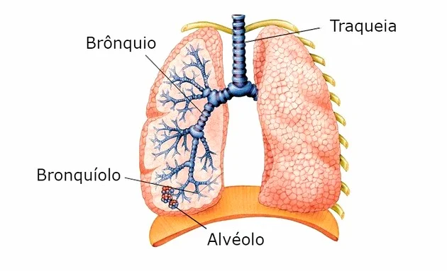
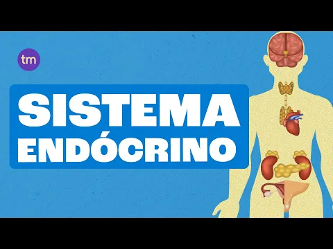

O corpo humano é formado pelos sistemas: cardiovascular, respiratório, digestório, nervoso, sensorial, endócrino, excretor, urinário, reprodutor, esquelético, muscular,imunológico, linfático, tegumentar. Cada um deles envolve órgãos que atuam para a realização das funções vitais do organismo.
Sistema Cardiovascular
Formado pelos vasos sanguíneos (artérias, veias e vasos capilares) e o coração, o sistema cardiovascular ou sistema circulatório é responsável pela movimentação sanguínea no corpo humano uma vez que sua função é transportar oxigênio e nutrientes para todas as partes do corpo.
Sistema Respiratorio
Formado pelas vias respiratórias (cavidades nasais, faringe, laringe, traqueia e brônquios) e pelos pulmões, o sistema respiratório é responsável pela absorção do oxigênio do ar e da eliminação do gás carbônico retirado das células.
Sistema Digestório
Formado pelo tubo digestório (boca, faringe, esôfago, estômago, intestino delgado, intestino grosso) e os órgãos anexos (glândulas salivares, dentes, língua, pâncreas, fígado e vesícula biliar), o sistema digestivo ou digestório é responsável pela digestão dos alimentos transformando-os em moléculas menores que serão absorvidas pelo organismo.
Sistema Nervoso
Formado pelo sistema nervoso central (encéfalo e medula espinhal) e sistema nervoso periférico (nervos cranianos e raquidianos), o sistema nervoso é responsável pela captação, interpretação e respostas às mensagens recebidas.
Sistema Sensorial
Formado pelos 5 sentidos do corpo humano (tato, paladar, olfato, visão, audição), o sistema sensorial está encarregado de enviar as informações recebidas para o sistema nervoso que as decodifica e envia respostas para o corpo.
A ação de tatear algo é transmitida através dos neurônios sensoriais presentes na pele ao sistema nervoso, que envia a resposta, ou seja, interpretará se a superfície identificada é lisa, rugosa, quente ou fria.
Da mesma maneira, as papilas gustativas enviam para o cérebro o sabor do alimento que receberá a identificação seu gosto (azedo, doce, amargo, salgado).
Sistema Endócrino
O sistema endócrino é formado por glândulas que realizam atividades vitais como a tireoide, hipófise, glândulas sexuais, dentre outras.
Dessa maneira, as glândulas são responsáveis por produzirem os hormônios os quais possuem determinadas funções como: regulação do metabolismo, defesa do organismo, produção de gametas, desenvolvimento corporal, dentre outros.
Sistema Excretor
Formado pelos rins e vias urinárias, o sistema excretor é responsável por eliminar resíduos que o corpo descarta, depois de passar pelo processo de digestão dos alimentos.
Em outras palavras, o sistema excretor elimina substâncias que estão em excesso no organismo, buscando um processo denominado de “equilíbrio dinâmico”.
Sistema Urinário
Formado pelos rins e vias urinárias (ureteres, bexiga urinária e uretra), o sistema urinário é responsável pela produção e eliminação da urina, de modo que filtra as “impurezas” do sangue.
Sistema Reprodutor
O sistema reprodutor humano é dividido em sistema reprodutor masculino e sistema reprodutor feminino, no entanto, ambos possuem a mesma função, ou seja, a reprodução de novos seres.
Sendo assim, o masculino é formado pelos testículos, epidídimos, canais deferentes, vesículas seminais, próstata, uretra e pênis; enquanto o sistema reprodutor feminino é composto pelos ovários, útero, tubas uterinas e vagina.
Sistema Esquelético
O sistema esquelético dá forma e sustenta todo o corpo humano. Além disso, protege os órgãos internos e desempenha um papel importante nos movimentos, juntamente com o sistemas muscular e articular.
Sistema Muscular
O sistema muscular estabiliza e ajuda a sustentar todo o nosso corpo, contribui na produção dos movimentos, ajuda a regular a temperatura corporal e auxilia o fluxo sanguíneo.
Sistema Imunológico
O sistema imunológico é composto por um conjunto de elementos do corpo humano que trabalham juntos para o defender de bactérias, vírus, micróbios e doenças. É uma barreira contra corpos estranhos, o escudo do corpo humano.
Sistema Linfático
É uma complexa rede de vasos que transporta a linfa pelo corpo. Em conjunto com o sistema imunológico, o sistema linfático ajuda a proteger as células imunes. Além disso, é responsável pela absorção dos ácidos graxos e pelo equilíbrio dos fluidos nos tecidos.
Sistema Tegumentar
O sistema tegumentar - ou pele - ajuda a regular a temperatura do corpo humano, e é responsável pela sensibilidade (juntamente com o sistema nervoso) mas acima de tudo protege o corpo, criando uma barreira a agressões externas e evitando a perda de líquido.
Sistema Cardiovascular
O sistema cardiovascular ou sistema circulatório é responsável pela circulação do sangue, de modo a transportar os nutrientes e o oxigênio por todo o corpo. O Sistema Cardiovascular é formado pelos vasos sanguíneos e o coração.
Artérias
As artérias são vasos do sistema cardiovascular, por onde passa o sangue que sai do coração, sendo transportado para as outras partes do corpo.
A musculatura das artérias é espessa, formada de tecido muscular bastante elástico. Permite, dessa maneira, que as paredes se contraiam e relaxem a cada batimento cardíaco.
As artérias se ramificam e diminuem seu diâmetro que, por sua vez, desemborcam em vasos ainda mais finos, os capilares.
Informações sobre os serviços que você oferece.
Veias
As veias são vasos do sistema cardiovascular que transportam o sangue das diversas partes do corpo de volta para o coração. Sua parede é mais fina que a das artérias e, portanto, o transporte do sangue é mais lento.
Assim, a pressão do sangue no interior das veias é baixa, o que dificulta o seu retorno ao coração. A existência de válvulas nesses vasos, faz com que o sangue se desloque sempre em direção ao coração.
Importante destacar que a maioria das veias (jugular, safena, cerebral e diversas outras) transporta sangue rico em gás carbônico. As veias pulmonares transportam sangue rico em oxigênio, dos pulmões para o coração.
Vasos Capilares
Os vasos capilares são ramificações microscópicas de artérias e veias, o que possibilita a formação de uma rede de comunicação entre os grandes vasos.
Suas paredes são constituídas por uma camada finíssima de células que permite a troca de substâncias entre o sangue e as células e vice-versa. As substâncias que são trocadas são: oxigênio, gás carbônico, nutrientes, entre outras.
Coração
O coração é um órgão do sistema cardiovascular localizado na caixa torácica, entre os pulmões. Possui a função de bombear o sangue através dos vasos sanguíneos para irrigar todo o corpo.
É oco e musculoso, envolvido por uma membrana denominada pericárdio, e internamente as cavidades cardíacas são revestidas pela membrana chamada endocárdio. Suas paredes são constituídas por um músculo, o miocárdio, responsável pelas contrações do coração.
O miocárdio apresenta internamente quatro cavidades: duas superiores denominadas átrios (direito e esquerdo) e duas inferiores denominadas ventrículos (direito e esquerdo). Os ventrículos possuem paredes mais grossas que os átrios.
O átrio direito comunica-se com o ventrículo direito e o mesmo acontece do lado esquerdo. No entanto, não há comunicação entre os dois átrios, nem entre os dois ventrículos
Para impedir o refluxo do sangue dos ventrículos para os átrios existem as valvas. Entre o átrio direito e o ventrículo direito é a valva tricúspide, já entre o átrio esquerdo e o ventrículo esquerdo é a mitral ou bicúspide.
O coração possui dois tipos de movimentos: sístole e diástole. A sístole é o movimento de contração em que o sangue é bombeado para o corpo. A diástole é o movimento de relaxamento, quando o coração se enche de sangue.
Pulsação
A pulsação do sistema cardiovascular é observada a cada vez que os ventrículos se contraem, impulsionando o sangue para as artérias, ou a cada batida do coração.
Por esse movimento de pulsação, também chamado de pulso arterial, é possível verificar a frequência dos batimentos cardíacos.
Importante destacar que o coração é um órgão que funciona em ritmo constante. As irregularidades no seu ritmo, indicam o mau funcionamento do coração, caracterizadas pelas arritmias cardíacas.
As arritmias podem se manifestar com palpitações, dificuldades respiratórias, dor no peito, tonturas e desmaios.
Sistema Respiratório
Cada um dos órgãos do Sistema Respiratório ajuda a manter o equilíbrio do organismo. Conheça a seguir as funções desenvolvidas pelo Sistema Respiratório.
Troca gasosa
Quando inspiramos o ar atmosférico, que contém oxigênio e outros elementos químicos, ele passa pelas vias respiratórias e chega aos pulmões.
É nos pulmões que acontece a troca do dióxido de carbono pelo oxigênio. E, graças aos músculos respiratórios que este órgão cria forças para o ar fluir. Tudo isso a partir de estímulos e comandos emitidos pelo Sistema Nervoso Central.
Equilíbrio ácido-base
O equilíbrio ácido-base corresponde à remoção do excesso de CO2 do organismo.
Nesta função, novamente temos a atuação do Sistema Nervoso, que é responsável por enviar informações para os controladores da respiração.
Produção de sons
A produção e emissão de sons é realizada pela ação conjunta do Sistema Nervoso e dos músculos que trabalham na respiração.
São eles que permitem o fluxo do ar das cordas vocais e da boca.
Defesa pulmonar
Ao respirar, é praticamente impossível eliminar as impurezas contidas no ambiente atmosférico. A inspiração de microrganismos se torna inevitável.
Para evitar problemas de saúde, o Sistema Respiratório apresenta mecanismos de defesa, que por sua vez, são realizados a partir da atuação dos diferentes órgãos.
Conheça a seguir quais são os órgãos do Sistema Respiratório e como eles atuam no nosso corpo.
Cavidades Nasais
As cavidades nasais são dois condutos paralelos revestidos de mucosa e separados por um septo cartilaginoso, que começam nas narinas e terminam na faringe.
No interior das cavidades nasais, existem pelos que atuam como filtro de ar, retendo impurezas e germes, garantindo que o ar chegue limpo aos pulmões.
A membrana que reveste as cavidades nasais contém células produtoras de muco que umidificam o ar. Ela é rica em vasos sanguíneos que aquecem o ar que entra no nariz.
Faringe
A faringe é um tubo que serve de passagem tanto para os alimentos quanto para o ar, portanto, faz parte do sistema respiratório e do sistema digestório.
Sua extremidade superior se comunica com as cavidades nasais e com a boca, na extremidade inferior se comunica com a laringe e o esôfago. Suas paredes são musculosas e revestidas de mucosa.

Brônquios
Os brônquios são duas ramificações da traqueia formados também por anéis cartilaginosos.
Cada brônquio penetra em um dos pulmões e divide-se em diversos ramos menores, que se distribuem por todo o órgão formando os bronquíolos.
Os brônquios se ramificam e subdividem-se várias vezes, formando a árvore brônquica.
Laringe
A laringe é o órgão que liga a faringe à traqueia. Na parte superior da laringe está a epiglote, a válvula que se fecha durante a deglutição.
Este é também o principal órgão da fala. Nela estão localizadas as cordas vocais.
Traqueia
A traqueia é um tubo situado abaixo da laringe e formado por quinze a vinte anéis cartilaginosos que a mantêm aberta.
Este órgão é revestido por uma membrana mucosa, e nela o ar é aquecido, umidificado e filtrado.
Sistema Digestório
O Sistema Digestório é também conhecido como Sistema Digestivo ou Aparelho Digestivo. Ele é formado por um conjunto de órgãos que atuam no corpo humano.
A ação desses órgãos está relacionada ao processo de transformação do alimento, que tem o objetivo de ajudar na absorção dos nutrientes.
Tudo isso acontece por meio de processos mecânicos e químicos.
Componentes do Sistema Digestório
O Sistema Digestório (nova nomenclatura) divide-se em duas partes.
Uma delas é o tubo digestório (propriamente dito), antes conhecido como tubo digestivo. Ele se divide em três partes: alto, médio e baixo. A outra parte corresponde aos órgãos anexos.
Veja no quadro abaixo os órgãos que compõem cada parte do Sistema Digestório.
Tubo Digestório Alto
O tubo digestório alto é formado pela boca, faringe e esôfago.
Conheça a seguir mais detalhes sobre cada um desses órgãos
Boca
A boca é a porta de entrada dos alimentos no tubo digestivo. Ela corresponde a uma cavidade forrada por mucosa, onde os alimentos são umidificados pela saliva, produzida pelas glândulas salivares.
Na boca ocorre a mastigação, que corresponde ao primeiro momento do processo da digestão mecânica. Ela acontece com os dentes e a língua.
Em um segundo momento entra em ação a atividade enzimática da ptialina, que é amilase salivar. Ela atua sobre o amido encontrado na batata, farinha de trigo, arroz e o transformando em moléculas menores de maltose.
Faringe
A faringe é um tubo muscular membranoso que se comunica com a boca, através do istmo da garganta e na outra extremidade com o esôfago. Para chegar ao esôfago, o alimento, depois de mastigado, percorre toda a faringe, que é um canal comum para o sistema digestório e o sistema respiratório.
Esôfago
O esôfago é um conduto musculoso, controlado pelo sistema nervoso autônomo.
É por meio de ondas de contrações, conhecidas como peristaltismo ou movimentos peristálticos, o conduto musculoso vai espremendo os alimentos e levando-os em direção ao estômago
Tubo Digestivo Médio
O tubo digestório médio é formado pelo estômago e intestino delgado (duodeno, jejuno e íleo).
Intestino Delgado
O intestino delgado é revestido por uma mucosa enrugada que apresenta inúmeras projeções. Está localizado entre o estômago e o intestino grosso e tem a função de segregar as várias enzimas digestivas. Isto dá origem a moléculas pequenas e solúveis: a glicose, aminoácidos, glicerol, etc.
O intestino delgado está dividido em três porções: o duodeno, o jejuno e o íleo.
O duodeno é a primeira porção do intestino delgado a receber o quimo que vem do estômago, que ainda está muito ácido, sendo irritante à mucosa duodenal.
Logo em seguida, o quimo é banhado pela bile. A bile é secretada pelo fígado e armazenada na vesícula biliar, contendo bicarbonato de sódio e sais biliares, que emulsificam os lipídios, fragmentando suas gotas em milhares de micro gotículas.
Sistema Nervoso
O sistema nervoso representa uma rede de comunicações do organismo.
É formado por um conjunto de órgãos do corpo humano que possuem a função de captar as mensagens, estímulos do ambiente, "interpretá-los" e "arquivá-los".
Consequentemente, ele elabora respostas, as quais podem ser dadas na forma de movimentos, sensações ou constatações. O Sistema Nervoso está dividido em duas partes fundamentais: sistema nervoso central e sistema nervoso periférico
Sistema Nervoso Central
O Sistema Nervoso Central é constituído pelo encéfalo e pela medula espinhal, ambos envolvidos e protegidos por três membranas denominadas meninges.
Encéfalo
O encéfalo, que pesa aproximadamente 1,5 quilo, está localizado na caixa craniana e apresenta três órgãos principais: o cérebro, o cerebelo e o tronco encefálico;
Cérebro
É o órgão mais importante do sistema nervoso. Considerado o órgão mais volumoso, pois ocupa a maior parte do encéfalo, o cérebro está dividido em duas partes simétricas: o hemisfério direito e o hemisfério esquerdo.
Assim, a camada mais externa do cérebro e cheia de reentrâncias, chama-se córtex cerebral, o responsável pelo pensamento, visão, audição, tato, paladar, fala, escrita, etc.
Ademais, é sede dos atos conscientes e inconscientes, da memória, do raciocínio, da inteligência e da imaginação, e controla ainda, os movimentos voluntários do corpo
Cerebelo
Está situado na parte posterior e abaixo do cérebro, o cerebelo coordena os movimentos precisos do corpo, além de manter o equilíbrio. Além disso, regula o tônus muscular, ou seja, regula o grau de contração dos músculos em repouso
Tronco Encefálico
Localizado na parte inferior do encéfalo, o tronco encefálico conduz os impulsos nervosos do cérebro para a medula espinhal e vice-versa.
Além disso, produz os estímulos nervosos que controlam as atividades vitais como os movimentos respiratórios, os batimentos cardíacos e os reflexos, como a tosse, o espirro e a deglutição.
Medula Espinhal
A medula espinhal é um cordão de tecido nervoso situado dentro da coluna vertebral. Na parte superior está conectada ao tronco encefálico.
Sua função é conduzir os impulsos nervosos do restante do corpo para o cérebro e coordenar os atos involuntários (reflexos)
Sistema Nervoso Periférico
Sistema Nervoso Periférico
O sistema nervoso periférico é formado por nervos que se originam no encéfalo e na medula espinhal.
Sua função é conectar o sistema nervoso central ao resto do corpo. Importante destacar que existem dois tipos de nervos: os cranianos e os raquidianos.
Nervos Cranianos: distribuem-se em 12 pares que saem do encéfalo, e sua função é transmitir mensagens sensoriais ou motoras, especialmente para as áreas da cabeça e do pescoço.
Nervos Raquidianos: são 31 pares de nervos que saem da medula espinhal. São formados de neurônios sensoriais, que recebem estímulos do ambiente; e neurônios motores que levam impulsos do sistema nervoso central para os músculos ou para as glândulas.
De acordo com a sua atuação, o sistema nervoso periférico pode ser dividido em sistema nervoso somático e sistema nervoso autônomo.
Sistema Nervoso Somático: regula as ações voluntárias, ou seja, que estão sob o controle da nossa vontade bem como regula a musculatura esquelética de todo o corpo.
Sistema Nervoso Autônomo: atua de modo integrado com o sistema nervoso central e apresenta duas subdivisões: o sistema nervoso simpático, que estimula o funcionamento dos órgãos, e o sistema nervoso parassimpático que inibe o seu funcionamento.
Sistema Sensorial
O corpo humano é composto de cinco sentidos: a visão, o olfato, o paladar, a audição e o tato.
Eles fazem parte do sistema sensorial, responsável por enviar as informações obtidas para o sistema nervoso central que, por sua vez, analisa e processa a informação recebida.
Essas capacidades estão relacionadas com órgãos ou partes do corpo humano (olhos, nariz, boca, ouvidos, mãos) e correspondem às percepções dos homens no mundo.
São realizadas por meio do processo de tradução, análise e processamento das informações sensoriais, o que muitas vezes, determinou a sobrevivência dos seres humanos, bem como dos animais no planeta terra
Os Cinco Sentidos
Visão
Os olhos são os órgãos responsáveis pelo sentido da visão, uma vez que eles visualizam o objeto e mandam a mensagem para o cérebro que faz a decodificação, interpretando-a.
Olfato
O nariz é o órgão responsável pelo sentido do olfato, ou seja, a propriedade de sentir o cheiro ou odor das coisas.
Dessa maneira, o nariz capta os odores e envia a mensagem para o cérebro, que processa as informações.
Paladar
A língua é o órgão responsável pelo sentido do paladar, uma vez que capta e distingui o sabor dos alimentos (salgado, doce, azedo, amargo), além das sensações de quente e frio. Assim, as papilas gustativas decodificam o sabor e enviam as informações para o cérebro.
Audição
Os ouvidos são os órgãos responsáveis pela audição, na medida em que detectam os sons, ruídos e barulhos do exterior, e enviam essas mensagens para o cérebro, que as interpreta.
Tato
O tato é caracterizado pela sensação do toque e, por isso, está relacionado com o contato com a pele, através dos neurônios sensoriais responsáveis por enviarem as mensagens para o cérebro.
Embora esteja muitas vezes relacionadas com as mãos, esse sentido humano envolve qualquer tipo de sensação experimentada pela pele, seja pelos pés, barriga, pernas, dentre outros.
Curiosidades
O chamado “sexto sentido” refere-se à percepção extra sensorial, muitas vezes pautada na espiritualidade. Ademais, costuma-se dizer que as mulheres possuem o sexto sentido mais aguçado.
Já foi comprovado que pessoas que sofrem com alguma deficiência relacionada ao sistema sensorial, acabam desenvolvendo e aguçando mais outros sentidos, por exemplo, um cego que desenvolve mais sua capacidade de ouvir ou até mesmo de tatear, como os livros em língua braile para os deficientes visuais.
Sistema Endócrino
O Sistema Endócrino é o conjunto de responsáveis pela produção dos hormônios que são lançados no sangue e percorrem o corpo até chegar aos órgãos-alvo sobre os quais atuam.
Junto com o sistema nervoso, o sistema endócrino coordena todas as funções do nosso corpo. O hipotálamo, um grupo de células nervosas localizadas na base do encéfalo, faz a integração entre esses dois sistemas.
Hipófise
A hipófise está localizada no centro da cabeça, logo abaixo do cérebro. Produz diversos hormônios, entre eles, o hormônio do crescimento.
É considerada a glândula mestre do nosso corpo, pois estimula o funcionamento de outras glândulas, como a tireoide e as glândulas sexuais.
O excesso da produção desse hormônio causa o gigantismo (crescimento exagerado) e a falta provoca o nanismo.
Outro hormônio produzido pela hipófise é o antidiurético (ADH), substância que permite ao corpo economizar água na excreção (formação da urina)
Tireoide
A tireoide está localizada no pescoço, produz a tiroxina, hormônio que controla a velocidade do metabolismo celular, na manutenção do peso e do calor corporal, no crescimento e no ritmo cardíaco.
O hipertireoidismo, funcionamento exagerado da tireoide, acelera todo o metabolismo: o coração bate mais rápido, a temperatura do corpo fica mais alta do que o normal, a pessoa emagrece por gastar mais energia.
Esse quadro favorece o aparecimento de doenças cardíacas e vasculares, pois o sangue circula com mais pressão. Se não tratada pode provocar o surgimento do bócio (inchaço no pescoço), e também a exoftalmia (olhos saltados).
O hipotireoidismo é quando a tireoide trabalha menos e produz menos tiroxina. Assim, o metabolismo se torna mais lento, algumas regiões do corpo ficam inchadas, o coração bate mais vagarosamente, o sangue circula mais lentamente, a pessoa gasta menos energia, tende a engordar e as respostas físicas e mentais tornam-se mais lentas e se não tratada pode ocorrer o bócio.
Paratireoides
As paratireoides são quatro pequenas glândulas, localizadas atrás da tireoide, que produzem o paratormônio, hormônio que regula a quantidade de cálcio e fósforo no sangue.
A diminuição desse hormônio reduz a quantidade de cálcio no sangue e faz com que os músculos se contraiam violentamente.
Esse sintoma é chamado de tetania, pois é semelhante ao que ocorre em pessoas com tétano. Por sua vez, o aumento da produção desse hormônio, transfere parte do cálcio para o sangue, de modo que enfraquece os ossos, tornando-os quebradiços.
Glândulas do Sistema Endócrino
As glândulas endócrinas estão localizadas em diferentes partes do corpo: hipófise, tireoide e paratireoides, timo, suprarrenais, pâncreas e as glândulas sexuais
Timo
O timo está situado entre os pulmões. Produz um hormônio que atua na defesa do organismo do recém-nascido contra infecções.
Nessa fase, apresenta um volume acentuado, crescendo normalmente até a adolescência, quando começa a atrofiar. Na idade adulta diminui de tamanho, pois tem suas funções reduzidas.
Pâncreas
O pâncreas é uma glândula mista pois além de hormônios (insulina e o glucagon) produz também o suco pancreático, que é lançado no intestino delgado e desempenha importante papel na digestão.
A insulina controla a entrada da glicose nas células (onde será utilizada na liberação de energia) e o armazenamento no fígado, na forma de glicogênio.
A falta ou a baixa produção de insulina provoca o diabetes, doença caracterizada pelo excesso de glicose no sangue (hiperglicemia).
O glucagon funciona de maneira oposta à insulina. Quando o organismo fica muitas horas sem se alimentar, a taxa de açúcar no sangue cai muito e a pessoa pode ter hipoglicemia, que gera a sensação de fraqueza, tontura, levando, em muitos caso, ao desmaio.
Nesse caso o pâncreas produz o glucagon, que age no fígado, estimulando a "quebra" do glicogênio em moléculas de glicose. Por fim, a glicose é enviada para o sangue normalizando a hipoglicemia

Sistema Excretor
O sistema excretor tem a função de eliminar os resíduos das reações químicas que ocorrem dentro das células, no processo de metabolismo.
Dessa maneira, muitas substâncias que não são aproveitadas no organismo, principalmente as tóxicas, são excretadas do corpo.
Importante ressaltar que o sistema excretor é encarregado de muito mais que apenas a eliminação de resíduos. Trata-se do principal responsável pelo controle da composição química do ambiente interno
Como funciona o Sistema Excretor
A eliminação de substâncias prejudiciais ou que estão em excesso em nosso corpo é chamada de excreção, processo que permite o equilíbrio interno do nosso organismo.
Os produtos da excreção são denominados "excretas", que são lançadas das células para o líquido que as banha (líquido intersticial), e daí são passadas para a linfa e para o sangue.
No processo de degradação de glicídios e lipídeos são produzidos gás carbônico e água. As proteínas também são metabolizadas, e do seu metabolismo resultam substâncias prejudiciais ao organismo entre elas, o gás carbônico e os produtos nitrogenados, como a amônia, a ureia e o ácido úrico.
Há também a água e os sais minerais, com destaque para o cloreto de sódio (o principal componente do sal de cozinha).
Para eliminar essas substâncias, a excreção é realizada através da urina, da respiração e do suor. Entenda, na sequência, como é feita a excreção desses resíduos
Excreção da Urina
A excreção através da urina inicia em um processo realizado pelos rins. Eles funcionam como um filtro que retém as impurezas do sangue e o deixa em condições de circular pelo organismo.
Os rins participam do controle das concentrações plásmicas de íons, como sódio, potássio, bicarbonato, cálcio e cloretos.
De acordo com as concentrações no sangue, esses íons podem ser eliminados em maior ou menor quantidade na urina, através do sistema urinário. As principais substâncias que formam a urina são ureia, ácido úrico e amônia
Excreção do Gás Carbonico
A excreção do gás carbônico é realizada através dos órgãos do sistema respiratório. A eliminação deste elemento é o produto final do metabolismo dos glicídios (carboidratos ou açúcares) e lipídios (gorduras) no processo de respiração celular
Excreção do suor
A produção de suor não está relacionada ao processo de excreção e sim da regulação de temperatura no organismo.
No entanto através do suor são eliminados sais minerais, como o cloreto de sódio, e água sendo que, devido a sua enorme importância para a célula, ela fica conservada em grande parte no organismo.
Órgãos que atuam no Sistema Excretor
Para eliminar os resíduos das reações químicas que nosso corpo produz, diferentes órgãos desempenham funções de extrema importância.
Rins
Os rins são órgãos do sistema urinário, porém que atuam diretamente na eliminação de resíduos que resultam da ação do metabolismo do organismo.
Considerando as substâncias eliminadas pelos rins destacam-se a ureia, a creatina e toxinas do sangue.
Além dessa função, ele também atua na regulação do volume de líquidos do organismo e no controle da pressão arterial sanguínea.
Néfrons
Os néfrons são estruturas presentes nos rins e que tem como principal ação a formação da urina. Ele filtra os elementos do plasma sanguíneo para então eliminar na urina.
Localizados nos rins, eles estão presentes em grandes quantidades no corpo humano, sendo aproximadamente 1.200.000 néfrons em cada rim.
Ureteres
O ureter é um tubo que liga o rim à bexiga, ou seja, ele transporta a urina dos rins para a bexiga, sendo um ureter para cada rim. Ele é um dos elementos do sistema urinário e que auxiliam na excreção das substâncias indesejadas.
Para desempenhar sua função, ele realiza movimentos peristálticos que auxiliam a condução da urina até a bexiga. Para isso, sua parede é formada por três camadas diferentes, sendo estas formadas por uma camada mucosa, uma muscular e outra adventícia.
Bexiga urinária
A bexiga urinária é o órgão responsável por armazenar a urina produzida pelos rins e transportada pelos ureteres. Além do armazenamento é ela quem elimina a urina.
Este é um órgão muscular com alta capacidade elástica, visto que pode armazenar até 800 ml de urina
Uretra
A uretra é o canal responsável por conduzir o caminho da urina para fora do corpo. Ela está ligada à bexiga urinária.
Nos homens a uretra termina no pênis, já nas mulheres termina na vulva.
Sistema Urinário
O Sistema Urinário ou Aparelho Urinário é responsável pela produção e eliminação da urina, possui a função de filtrar as "impurezas" do sangue que circula no organismo.
O Sistema Urinário é composto por dois rins e pelas vias urinárias, formada por dois ureteres, a bexiga urinária e a uretra.
Rins
Os rins são órgãos que se situam na parte posterior da cavidade abdominal, localizados um em cada lado da coluna vertebral. São de cor vermelho - escuro e têm o formato semelhante ao de um grão de feijão e do tamanho aproximado de uma mão fechada.
Os rins se ligam ao sistema circulatório através da artéria renal e da veia renal, e com as vias urinárias pelos ureteres. As artérias renais são ramificações muito finas que formam pequenos emaranhados chamados glomérulos. Cada glomérulo é envolvido por uma estrutura arredondada, chamada cápsula glomerular ou cápsula de Bowman. Por conseguinte, a unidade básica de filtragem do sangue é chamada néfron, que é formada pelos glomérulos, pela cápsula glomerular e pelo túbulo renal.
Forçado pela pressão sanguínea, parte do plasma (água e partículas pequenas nela dissolvidas, como sais minerais, ureia, ácido úrico, glicose) sai dos capilares que formam os glomérulos e cai na cápsula glomerular. Em seguida passa para o túbulo renal.
Substâncias úteis como água, glicose e sais minerais, contidas nesse líquido, atravessam a parede do túbulo renal e retornam à circulação sanguínea. Assim, o que resta nos túbulos é uma pequena quantidade de água e resíduos, como a ureia, ácido úrico e amônia: é a urina, que segue para as vias urinárias. Observe no esquema a seguir as fases de formação da urina dentro no néfron.
Vias Urinárias
Bexiga Urinária
Órgão muscular elástico, uma espécie de bolsa, que está situada na parte inferior do abdome com a função de acumular a urina que chega dos ureteres. Portanto, a bexiga recebe e armazena temporariamente a urina e quando o volume chega a mais ou menos 300 ml, os sensores nervosos da parede da bexiga enviam mensagens ao sistema nervoso, fazendo com que tenhamos vontade de urinar.
Na parte inferior da bexiga, encontra-se um esfíncter - músculo circular que fecha a uretra e controla a micção. Quando a bexiga está cheia o esfíncter se contrai, empurrando a urina em direção a uretra, de onde então é lançada para fora do corpo. A capacidade máxima de urina na bexiga é de aproximadamente 1 litro
Ureteres
São dois tubos de aproximadamente 20 cm de comprimento cada, que conduz a urina dos rins para a bexiga.
Uretra
Tubo muscular, que conduz a urina da bexiga para fora do corpo. A uretra feminina mede cerca de 5 cm de comprimento e transporta somente a urina. A uretra masculina mede cerca de 20 cm e transporta a urina para fora do corpo, e também o esperma.
Doenças do Sistema Urinário
Muitas doenças estão associadas ao sistema urinário seja nos rins ou nas vias urinárias (ureteres, bexiga e uretra).
Sistema Reprodutor
O Sistema Reprodutor Feminino ou Aparelho Reprodutor Feminino é o sistema responsável pela reprodução humana.
Ele cumpre diversos papéis importantes:
produz os gametas femininos (óvulos);
fornece um local apropriado para a ocorrência da fecundação;
permite a implantação de embrião;
oferece ao embrião condições para seu desenvolvimento;
executa atividade motora suficiente para expelir o novo ser quando ele completa sua formação.
Anatomia do Sistema Reprodutor Feminina
O sistema reprodutor feminino é formado pelos seguintes órgãos: ovários, tubas uterinas, útero e vagina.
Os ovários são dois órgãos de forma oval que medem de 3 a 4 cm de comprimento. Eles são responsáveis pela produção dos hormônios sexuais da mulher, o progesterona e o estrogênio. Nos ovários também são armazenadas as células sexuais femininas, os óvulos.
Assim, durante a fase fértil da mulher, aproximadamente uma vez por mês, um dos ovários lança um óvulo na tuba uterina: é a chamada ovulação
Tubos Uterinos
Tubas uterinas são dois tubos, com aproximadamente 10 cm de comprimento, que unem os ovários ao útero. A partir disso, o óvulo amadurecido sai do ovário e penetra na tuba.
Se o óvulo for fecundado por um espermatozoide, forma-se uma célula-ovo ou zigoto, que se encaminha para o útero, local onde se fixa e desenvolve, originando um novo ser.
Útero
O útero é um órgão muscular oco de grande elasticidade, do tamanho e forma semelhante a uma pera. Sua principal função é acomodar o feto até o nascimento do bebê.
Na gravidez ele se expande, acomodando o embrião que se desenvolve até o nascimento. A mucosa uterina é chamada de endométrio, que passa por um processo de descamação durante o período da menstruação.
Vagina
A vagina é o órgão sexual feminino e atua como o canal que faz a comunicação do útero com o meio excretor. Ela possui aproximadamente 8 cm de comprimento e 2,5 cm de diâmetro. Suas paredes são franjadas e com glândulas secretoras de muco. Suas funções estão relacionadas à passagem do sangue durante a menstruação, a penetração do pênis durante a relação sexual e o principal canal do parte, sendo este local por onde sai o bebê.
Menstruação
A menstruação representa o início da vida fértil de uma mulher, isto é, o período em que a mulher atinge sua maturidade e já pode engravidar.
Ela corresponde, portanto, à eliminação pelo corpo feminino do material resultante da descamação da mucosa uterina e do sangue resultante do rompimento dos vasos sanguíneos. Ela ocorre quando não há fecundação do óvulo
Ciclo Menstrual
O ciclo menstrual é o período entre o início de uma menstruação e outra. Esse período dura, em média, 28 dias, mas pode ser mais curto ou mais longo.
A primeira menstruação chama-se “menarca” e na maioria das vezes, ocorre entre os 12 e os 13 anos. Por volta dos 50 anos, fase é chamada de "menopausa", o óvulos se esgotam e cessam as menstruações e a fertilidade da mulher.
Sistema Esquelético
O sistema esquelético é constituído de ossos e cartilagens, além dos ligamentos e tendões.
Funções
Suporte: O esqueleto fornece uma estrutura rígida que suporta o corpo e mantém sua forma. Ele serve como ponto de fixação para os músculos, o que é essencial para a locomoção e para a manutenção da postura.
Proteção: Os ossos protegem órgãos internos vitais. Por exemplo, o crânio protege o cérebro, as costelas protegem o coração e os pulmões, e a coluna vertebral protege a medula espinhal.
Movimento: Os ossos atuam como alavancas e, em conjunto com os músculos, permitem a realização de movimentos. As articulações entre os ossos permitem a mobilidade necessária para caminhar, correr, levantar objetos, entre outros.
Produção de Células Sanguíneas: A medula óssea, encontrada em alguns ossos, é responsável pela produção de células sanguíneas, incluindo glóbulos vermelhos, glóbulos brancos e plaquetas, por meio de um processo chamado hematopoiese.
Armazenamento de Minerais: Os ossos são um reservatório de minerais, principalmente cálcio e fósforo, que podem ser liberados na corrente sanguínea conforme necessário para manter o equilíbrio mineral do corpo.
Armazenamento de Lipídios: A medula óssea amarela, presente em alguns ossos, armazena lipídios que servem como fonte de energia
Estrutura dos OssosPeriósteo: Camada externa que reveste o osso.
Osso Compacto: Parte densa e externa.
Osso Esponjoso: Parte interna porosa contendo a medula óssea.
Medula Óssea: Tecido no interior dos ossos para produção de sangue
e armazenamento de gordura.
Desenvolvimento e Manutenção ÓsseaOssificação: Formação dos ossos.
Remodelação Óssea: Renovação
Problemas e Doenças ComunsOsteoporose: Diminuição da densidade óssea.
Artrite: Inflamação das articulações.
Fraturas: Quebras nos ossos.
Escoliose: Curvatura anormal da coluna.
Osteomielite: Infecção óssea
Estrutura do Esqueleto HumanoEsqueleto Axial: Inclui o crânio, coluna vertebral e caixa torácica.
Esqueleto Apendicular: Compreende membros superiores e inferiores, cinturas escapular e pélvica
O sistema muscular é um componente vital do corpo humano, responsável por permitir o movimento, manter a postura, gerar calor e desempenhar muitas outras funções essenciais. Ele trabalha em conjunto com o sistema esquelético e nervoso para realizar uma variedade de tarefas necessárias para a sobrevivência e o bem-estar. Vamos explorar as principais características do sistema muscular.
Funções do Sistema Muscular
Movimento: Os músculos esqueléticos, em conjunto com os ossos e articulações, permitem a movimentação do corpo, incluindo caminhar, correr, levantar objetos e todas as ações físicas.
Postura e Estabilidade: Músculos mantêm o corpo em posição estável e ereta, resistindo à gravidade e proporcionando equilíbrio.
Produção de Calor: Durante a contração, os músculos geram calor como um subproduto, ajudando a manter a temperatura corporal adequada (termogênese).
Circulação Sanguínea: O coração, que é um músculo cardíaco, bombeia sangue pelo corpo. Além disso, a contração dos músculos esqueléticos auxilia o retorno do sangue venoso para o coração.
Respiração: Músculos como o diafragma e os intercostais desempenham um papel crucial na respiração, permitindo a expansão e contração dos pulmões.
Digestão e Funções Internas: Músculos lisos nas paredes dos órgãos internos, como o estômago e intestinos, ajudam a mover alimentos e outras substâncias pelo sistema digestivo.
Expressão Facial e Comunicação: Músculos faciais permitem expressões e movimentos necessários para a comunicação não verbal
Tipos de Músculos
O corpo humano contém três tipos principais de músculos, cada um com características e funções distintas:
Músculos Esqueléticos:
Estrutura: São músculos voluntários, estriados e ligados aos ossos por tendões.
Função: Responsáveis por movimentos conscientes e controlados, como caminhar, levantar e escrever.
Exemplos: Bíceps, tríceps, quadríceps.
Músculos Cardíacos:
Estrutura: Músculo involuntário, estriado, encontrado apenas no coração.
Função: Bombeia o sangue pelo corpo de forma rítmica e constante.
Características: Possui automatismo, contraindo-se sem a necessidade de estímulos externos constantes.
Músculos Lisos:
Músculos involuntários, não estriados, encontrados nas paredes de órgãos internos e vasos sanguíneos.
Função: Regula o movimento de substâncias dentro de órgãos como o estômago, intestinos, artérias, e bexiga.
Exemplos: Músculos das paredes intestinais, musculatura da bexiga.
Estrutura dos Músculos Esqueléticos
Os músculos esqueléticos são compostos por várias camadas de tecido e estruturas associadas:
Fibras Musculares: As células musculares, ou fibras, são longas e cilíndricas, com várias organelas especializadas.
Sarcômero: A menor unidade funcional do músculo, responsável pela contração, composta por filamentos de actina e miosina.
Fáscia: Camada de tecido conjuntivo que envolve o músculo.
Tendões: Estruturas fibrosas que conectam músculos aos ossos, transmitindo a força gerada pela contração muscular
Mecanismo de Contração Muscular
A contração muscular é um processo complexo que envolve interações entre filamentos proteicos dentro do sarcômero. Aqui está um resumo do processo:
Estimulação Nervosa: Um impulso nervoso atinge a junção neuromuscular, liberando o neurotransmissor acetilcolina.
Despolarização: O potencial de ação é gerado na membrana da fibra muscular, levando à liberação de íons cálcio do retículo sarcoplasmático.
Ligação de Cálcio: Íons cálcio se ligam à troponina, permitindo que a actina e a miosina interajam.
Ciclo de Ponte Cruzada: As cabeças de miosina se ligam aos sítios ativos da actina, puxando os filamentos e encurtando o sarcômero, resultando na contração muscular.
Relaxamento: O cálcio retorna ao retículo sarcoplasmático, cessando a contração.
Sistema Imunológico
O sistema imunológico é uma complexa rede de células, tecidos e órgãos que trabalham juntos para proteger o corpo contra patógenos, como bactérias, vírus, fungos e parasitas, além de detectar e eliminar células anormais, como células cancerígenas. Ele desempenha um papel crucial na defesa do organismo e na manutenção da saúde geral. Vamos explorar as principais características do sistema imunológico, suas funções, componentes e como ele nos protege.
Funções do Sistema Imunológico
Defesa Contra Patógenos: Protege o corpo contra organismos invasores, como bactérias, vírus, fungos e parasitas.
Reconhecimento de Células Estranhas: Distingue entre células próprias e estranhas, evitando danos aos tecidos do corpo.
Memória Imunológica: Recorda infecções passadas para responder mais rapidamente a infecções futuras do mesmo patógeno.
Destruição de Células Anormais: Identifica e elimina células cancerígenas ou anormais.
Equilíbrio Imunológico: Regula as respostas para evitar reações autoimunes.
Componentes do Sistema Imunológico
Sistema Imunológico Inato (Primeira Linha de Defesa)
Barreiras Físicas e Químicas:
Pele e Membranas Mucosas: Impedem a entrada de patógenos.
Secreções (Suor, Lágrimas, Saliva): Contêm enzimas que destroem micróbios.
Células Inatas:
Fagócitos (Macrófagos e Neutrófilos): Engolfam e destroem patógenos.
Células NK (Natural Killer): Atacam células infectadas ou cancerígenas.
Células Dendríticas: Apresentam antígenos e ativam a imunidade adaptativa.
Proteínas Inatas:
Sistema Complemento: Proteínas que destroem patógenos e auxiliam na inflamação.
Citocinas: Sinalizam e regulam a resposta imune.
Sistema Imunológico Adaptativo (Segunda Linha de Defesa):
Linfócitos:
Linfócitos B: Produzem anticorpos específicos para antígenos.
Linfócitos T:
T Auxiliares: Coordenam a resposta imune.
T Citotóxicos: Destroem células infectadas.
Anticorpos: Proteínas que neutralizam patógenos ao se ligarem especificamente a antígenos.
Órgãos Linfóides:
Timo: Maturação das células T.
Medula Óssea: Produção de células sanguíneas e maturação dos linfócitos B.
Linfonodos: Filtram antígenos e ativam células imunes.
Baço: Filtra sangue e remove células danificadas.
Mecanismo de Resposta Imunológica
Fase Inata:
Reconhecimento e Destruição: Células inatas identificam padrões moleculares de patógenos e os destroem.
Inflamação: Citocinas e quimiocinas causam inflamação, atraindo células imunes.
Ativação do Complemento: Proteínas complementares opsonizam e destroem patógenos.
Fase Adaptativa:
Apresentação de Antígenos: Células dendríticas apresentam antígenos para linfócitos T.
Ativação de Linfócitos:
Linfócitos B: Produzem anticorpos.
Linfócitos T: Eliminam células infectadas.
Memória Imunológica: Células de memória garantem resposta rápida a futuras infecções
Problemas e Doenças do Sistema Imunológico
Doenças Autoimunes: O sistema imune ataca tecidos saudáveis do corpo.
Exemplos: Lúpus, artrite reumatoide, esclerose múltipla.
Imunodeficiências: Fraqueza na resposta imune, pode ser genética ou adquirida.
Exemplos: AIDS, imunodeficiência combinada severa (SCID).
Alergias: Reações exageradas a substâncias inofensivas.
Exemplos: Alergias alimentares, asma, febre do feno.
Câncer do Sistema Imune: Desenvolvimento de células malignas nos órgãos linfóides.
Exemplos: Linfomas, leucemias.
Sistema Linfático
O sistema linfático é uma parte essencial do corpo humano, responsável por funções vitais como drenagem de fluidos, absorção de gorduras, remoção de resíduos e suporte ao sistema imunológico. Ele é composto por vasos linfáticos, linfonodos, órgãos linfáticos e linfa, trabalhando em conjunto para manter a saúde e a homeostase do organismo
Funções
Drenagem de Fluidos: Remove o excesso de fluido intersticial dos tecidos e o devolve à corrente sanguínea, prevenindo o inchaço (edema).
Absorção de Gorduras: Absorve e transporta gorduras e vitaminas lipossolúveis do intestino delgado para o sistema circulatório.
Resposta Imune: Hospeda células imunes que identificam e combatem patógenos, filtrando a linfa e removendo células anormais.
Remoção de Resíduos: Filtra e elimina detritos celulares, toxinas e produtos residuais do corpo.
Componentes Principais
Vasos Linfáticos: Canais que transportam a linfa, coletando fluidos dos tecidos para os ductos linfáticos maiores.
Linfonodos: Pequenas estruturas ovais que filtram a linfa, contendo linfócitos que combatem infecções e removem detritos.
Órgãos Linfáticos:
Baço: Filtra o sangue e remove células sanguíneas danificadas.
Timo: Local de maturação das células T.
Amígdalas: Defendem contra patógenos que entram pela boca e nariz.
Linfa: Líquido claro composto por glóbulos brancos, proteínas e resíduos
Mecanismo de Circulação Linfática
Capilares Linfáticos: Absorvem fluidos dos tecidos.
Vasos Linfáticos: Conduzem a linfa através dos linfonodos e para os ductos maiores.
Ductos Linfáticos: Drenam a linfa de volta à corrente sanguínea nas veias subclávias.
Movimento Impulsionado: O fluxo de linfa é impulsionado por movimentos musculares, valvas unidirecionais, e mudanças de pressão devido à respiração.
Manutenção de Saúde de Sistema Linfático
Exercício Regular: Promove a circulação linfática e a drenagem de fluidos.
Hidratação Adequada: Mantém a linfa fluida para facilitar o transporte de nutrientes e resíduos.
Alimentação Saudável: Dieta rica em antioxidantes e fibras apoia a função linfática.
Massagem Linfática: Estimula o fluxo linfático e ajuda a reduzir o inchaço.
Evitar Toxinas: Reduz a carga sobre o sistema linfático
Problemas e doenças comuns
infedema: Acúmulo de fluido nos tecidos devido a bloqueios nos vasos linfáticos, causando inchaço.
Infecções Linfáticas: Como linfangite e linfadenite, resultantes de infecções bacterianas.
Câncer Linfático: Linfomas são cânceres que afetam o tecido linfático.
Distúrbios Autoimunes: Quando o sistema imune ataca o próprio corpo, como no lúpus
Sistema Tegular
Pele (Derme e Epiderme)
Epiderme: É a camada mais externa da pele, composta principalmente por células chamadas queratinócitos. A epiderme também contém melanócitos, que produzem melanina (responsável pela cor da pele) e células de Langerhans, que têm funções imunológicas.
Derme: Localizada abaixo da epiderme, é rica em tecido conjuntivo e contém vasos sanguíneos, nervos, glândulas sudoríparas e folículos pilosos. A derme é dividida em duas camadas:
Derme Papilar: A camada mais superficial, com papilas dérmicas que se projetam para a epiderme e contêm terminações nervosas e capilares.
Derme Reticular: A camada mais profunda e espessa, que fornece suporte estrutural à pele e contém fibras colágenas e elásticas.
Hipoderme (ou Subcutâneo)
A camada mais profunda, localizada abaixo da derme. É composta por tecido adiposo (gordura) e tecido conjuntivo, e serve como amortecedor para proteger os órgãos internos, além de ajudar na regulação da temperatura corporal.
Cabelos
Folículo Piloso: Estrutura que abriga a raiz do cabelo e está localizado na derme. É responsável pelo crescimento do cabelo.
Glândula Sebácea: Geralmente associada ao folículo piloso, produz sebo, uma substância oleosa que lubrifica o cabelo e a pele.
Unhas
Placa Ungueal: A parte visível da unha, composta por células queratinizadas.
Matriz Ungueal: Localizada na base da unha, é onde ocorre o crescimento da unha.
Lúnula: A área branca em forma de meia-lua na base da unha, que é a parte visível da matriz.
Glândulas
Glândulas Sudoríparas: Existem dois tipos principais:
Ecrinas: Distribuídas por quase toda a superfície da pele e são responsáveis pela produção de suor, que ajuda na regulação da temperatura.
Apócrinas: Localizadas principalmente nas axilas e na região genital, secretam um suor mais espesso que pode contribuir para o odor corporal.
Glândulas Sebáceas: Produzem sebo, que ajuda a manter a pele e o cabelo hidratados.